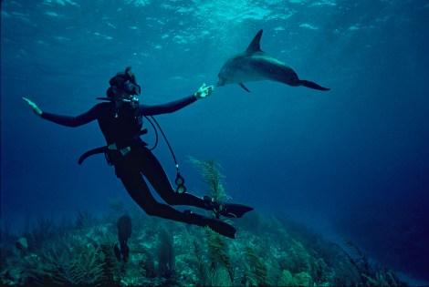

Launch Your Future as a Marine Biologist
Dive into oceans, study sea life, and protect underwater worlds!
Pathway Snapshot
High School Courses | College Majors | Career Roles |
Biology | Marine Biology | Marine Biologist |
Chemistry | Biology | Marine Ecologist |
Environmental Science | Environmental Science | Oceanographer |
Computer Science | Oceanography | Fisheries Scientist |
Statistics | Zoology | Conservation Scientist |
Physics | Data Science (optional) | Marine Policy Advisor |
Women Who Lead the Way
Sylvia Earle
Chief Scientist, National Oceanic and Atmospheric Administration; Explorer in Residence, National Geographic Society; Founder, Mission Blue

Photo Credit: James A. Sugar, National Geographic
“The ocean is the blue heart of the planet—and we must protect it.”
Sylvia Earle is an American oceanographer, marine biologist, and explorer recognized for her pioneering deep-sea research and lifelong advocacy for ocean conservation. Nicknamed “Her Deepness,” she is a leading voice in global efforts to protect marine ecosystems and expand marine protected areas worldwide.
Day in the Life
Daily Tasks | Tools & Technologies Used |
Collect ocean and marine life samples | Research vessels & submersibles |
Analyze data on species and ecosystems | GIS mapping software |
Study impacts of climate change | Data analysis tools (R, Python) |
Conduct underwater surveys | Scuba & remote-operated vehicles (ROVs) |
Write research reports & present findings | Scientific databases & lab equipment |
Collaborate with scientists and policymakers | Satellite imagery & sensors |
Mini-Activity: Try This!
Ocean Data Detective
- Explore real ocean data by visiting a public marine database (like sea temperature or coral reef maps).
- Identify one trend you notice and explain how it might affect marine life.
Careers & Resources
- https://www.scholarships.com (search “marine biology”)
Summer Camps & Programs:
- NOAA Ocean Exploration Programs
- Sea Camp (marine science summer camps)
Explore More:
- O*NET: https://www.onetonline.org
- Roadtrip Nation: https://roadtripnation.com/careers/marine-biologist
You Belong Here
If you love the ocean, science, technology, and making a difference for the planet, marine biology could be your future. You don’t have to choose between adventure and impact—you can dive into both and help protect our blue planet.
